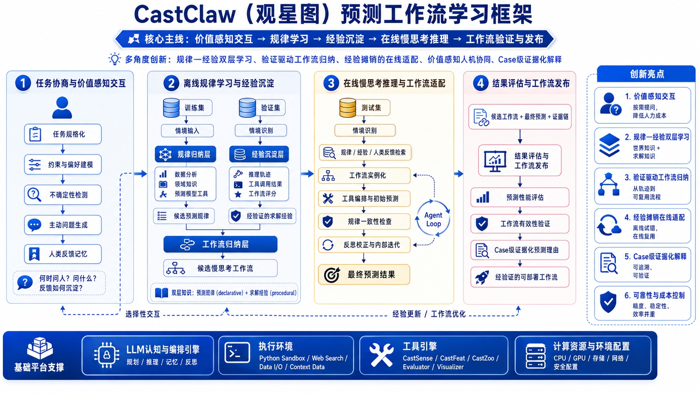

CastClaw 1.3.0 版本上线
支持直接提交 UserPrior，充分利用已有预测先验，无需重复进行模型搜索和训练；新增 ARIMA、AutoARIMA、ETS、Holt、Holt-Winters、Theta 等统计模型；新增 stride、forecast_gap 等参数，支持更复杂的预测窗口设置。本次更新同时优化了按比例或时间戳进行数据集切分、模型权重复用机制，以及预测结果与评估指标的保存，方便后续分析、复现和可视化。
下面的视频展示了 CastClaw 在真实终端工作流中的使用方式，包括任务规格化、工具调用、预测执行、结果评估和人类反馈等关键环节。注意：演示视频为静音版，播放时没有声音。你也可以直接下载原始压缩版演示文件 castclaw-demo.mp4。
在能源调度、金融风控、工业智能等关键领域中，时间序列预测是支撑决策的重要基础。从最早的统计模型，到机器学习驱动的端到端方法，研究者不断尝试提升模型对复杂动态系统的刻画能力。然而，随着真实场景中数据非平稳性增强、情境因素日益复杂，传统“给定历史-预测未来”的静态建模范式，正在逐渐触及其能力边界。
当前时序预测正面临一个显著的困局：模型虽然在基准数据集上不断刷新精度指标，但在真实复杂环境中却往往表现出脆弱性。一方面，模型缺乏对情境信息的深度理解，难以应对分布漂移与突发事件；另一方面，预测过程高度“黑箱化”，缺乏可解释的推理路径，也无法在关键决策节点引入人类经验与领域知识。这种“单次前向推理”的范式，使得模型难以像人类专家一样，通过分析、判断与反思不断修正预测结果。
针对这一挑战，中国科学技术大学认知智能全国重点实验室团队提出 CastClaw：一种面向预测工作流学习的人机协同框架。该方法不再把预测视为一次性模型输出，而是将其重构为“任务协商、规律归纳、经验沉淀、在线推理、证据评估”的连续学习过程。系统会先通过价值感知交互澄清目标和约束，再从训练集与验证集分别学习预测规律和求解经验，最终在测试场景中进行慢思考式工作流适配。
进一步地，CastClaw 将“世界知识 + 求解知识”统一纳入工作流学习：规律归纳层负责从数据分析、领域知识和预测模型工具中生成候选预测规律；经验沉淀层负责从推理轨迹、工具调用结果与工作流评分中提炼可复用经验。在线阶段，Agent 通过检索规律、经验与人类反馈，实例化候选工作流，调用 CastSense、CastFeat、CastZoo、Evaluator 等工具进行预测，并在一致性检查与反思迭代后输出最终结果。
关键词：需求澄清 → 任务建模 → 一次性生成预测方案。Agent 扮演"咨询专家"角色，通过多轮启发式对话消除预测目标的模糊性，只有当预测计划被用户最终确认后才正式启动任务。
用户输入"预测下周电力负荷"，Agent 不直接运行模型，而是反问："是否需要考虑工业节假日计划？是否融合天气预报数据？"
通过 2–3 轮对话，逐步明确预测的时间粒度（Granularity）、置信区间要求，以及关键外生变量的取舍。
在启动前展示一份结构化"预测计划书"，用户确认时间粒度、关键变量与置信区间后，Agent 才正式进入预测流程。
关键词：边做边想 → 经验审核 → 人机共建预测。这是一种"人在回路（Human-in-the-loop）"的动态交互，Agent 将内部思考逻辑和经验沉淀过程实时透明地展示给用户，并允许用户修正候选经验的适用边界。
在情境识别、候选规律生成、工作流评分和证据解释阶段，实时展示中间依据，让经验如何形成始终可观测。
用户发现某条经验不适用于当前情境时，可补充领域证据、标注异常 Case 或调整适用条件，Agent 据此更新经验链。
记录用户对候选规律、失败归因和发布结论的反馈，作为经验库更新信号，持续优化后续工作流选择。
| 模式 | 用户角色 | CastClaw 角色 | 关键动作 | 交付物 |
|---|---|---|---|---|
| 苏格拉底式 | 决策者 | 咨询专家 | 反思、澄清、规划 | 深度预测报告 + 归因建议 |
| 认知伴随式 | 协同开发者 | 智能搭档 | 审核、反馈、经验沉淀 | 经验链路可视化 + 可复用工作流 |
CastClaw 在任务开始时主动识别目标、约束、偏好和不确定点，只在高价值节点发起追问或请求确认。交互结果会被写入任务规格和反馈记忆，成为后续规律学习与工作流选择的价值依据。
围绕预测对象、时间粒度、外部变量等提问，避免过度打扰，也避免任务定义缺口进入后续流程。
把业务偏好转成可执行约束，例如精度优先、稳定性优先、可解释性优先或特定模型禁用。
将人类修正、拒绝理由和结果偏好沉淀为记忆，使相似任务能更快进入合适的工作流。
CastClaw 将离线学习拆成两条互补路径：规律归纳层从训练数据、领域知识和模型工具中抽取“世界知识”；经验沉淀层从验证过程、推理轨迹和工作流评分中抽取“求解知识”。两类知识共同决定在线阶段怎么推理、怎么调用工具、怎么迭代。
基于数据分析、领域知识和预测模型工具，生成候选预测规律，回答“这个序列可能遵循什么模式”。
记录推理轨迹、工具调用结果、工作流评分和失败原因，提炼“面对这类 Case 应该怎么解”。
在线推理时同时检索规律与经验，让系统既知道“数据像什么”，也知道“过去怎样处理更可靠”。
CastClaw 不把经验停留在自然语言总结里，而是通过验证集把候选规律、工具组合和工作流实例进行筛选、评分与归纳。只有通过验证的工作流经验才会进入可复用链路，降低离线试错向在线应用迁移时的风险。
对训练阶段归纳出的规律进行验证集检验，筛掉偶然相关、过拟合或与业务约束冲突的规则。
把“规律、经验、工具、模型、评估指标”组合成候选工作流，形成可执行而不是只可描述的策略。
依据预测性能、稳定性、成本、可解释性和人类反馈对工作流评分，沉淀为后续任务可检索的经验链。
在线阶段，CastClaw 面对新的测试情境不会直接套用固定模型，而是先识别情境、检索经验/人类反馈，再实例化工作流并调用工具链进行预测。Agent Loop 会持续做一致性检查、反思校正和内部迭代，直到形成最终预测结果。
判断当前测试样本的趋势、周期、外部事件和与历史 Case 的相似性，确定该调用哪些规律与经验。
按工作流调用 CastSense、CastFeat、CastZoo、Evaluator、Visualizer 等工具，完成分析、建模、评估和可视化。
对预测结果做规律一致性检查、误差归因和内部迭代，必要时回到工作流实例化环节重新选择路线。
CastClaw 的输出不是孤立数值，而是“候选工作流 + 最终预测 + 证据链”。系统会评估预测性能、验证工作流有效性，并用 Case 级证据说明预测理由，最终发布经验证的可部署工作流。
从误差、稳定性、成本和业务指标多角度评估结果，避免只依赖单一排行榜式指标。
验证工作流是否真的带来收益，是否可部署，并记录失败边界。
将通过验证的流程发布为可复用工作流，为下一批任务提供起点。
从任务规格化、约束偏好建模、不确定性检测和主动问题生成开始，把人的判断转化为后续学习流程可使用的价值信号。
训练集侧归纳预测规律，验证集侧沉淀求解经验，用“世界知识 + 求解知识”共同支撑在线工作流适配。
在线推理得到的工作流和预测结果会经过性能评估、有效性验证和 Case 级证据化解释，再发布为可部署流程。
这套设计的核心取舍是：先学习可复用流程，再让流程服务具体预测。CastClaw 不是简单替代研究者选择模型，而是帮助研究者把判断、规律、经验和验证结果沉淀成可以迁移的预测工作流。
CastClaw 的主线可以概括为四个阶段：任务协商与价值感知交互负责把用户目标转成结构化任务；离线规律学习与经验沉淀负责从训练集和验证集中分别学习预测规律与求解经验；在线慢思考推理与工作流适配负责面向测试情境检索知识、实例化工作流并调用工具预测；结果评估与工作流发布负责验证效果、解释原因并沉淀可部署流程。

关键设计决策：框架将训练集、验证集和测试集承担的角色显式区分：训练集用于规律归纳，验证集用于经验沉淀与工作流筛选，测试集用于在线情境适配和最终评估。这样可以减少凭直觉改结果的风险，使每一次工作流发布都具备证据链。
检测任务缺口和高风险决策点，主动生成问题，把用户注意力集中在最影响结果的位置。
从数据分析、领域知识和模型工具中提炼候选规律，形成可被检索、验证和解释的规则资产。
根据当前情境把规律、经验、工具和模型组合成候选工作流，而不是固定套用单一模型流程。
用已归纳规律、人类反馈和验证经验检查预测结果是否合理，发现冲突时进入反思校正。
为每个关键结果保留情境识别、规律引用、工具调用、评估指标和反思记录，做到可追溯、可验证。
在工作流评分中同时纳入精度、稳定性、效率和预算约束，让发布结果既可靠又可落地。
按照预测工作流学习的设计逻辑，CastClaw 的能力链条不是“先选模型再直接训练”，而是围绕 情境识别 → 规律/经验检索 → 工作流实例化 → 工具调用与初始预测 → 评估反思 推进。这样做的结果是，系统不再只依赖某一个模型的泛化能力，而是依赖由知识、经验、工具和验证共同组成的能力闭环。
LLM 认知与编排引擎负责规划、推理、记忆和反思，执行环境负责连接数据与外部信息，工具引擎负责落地分析、建模、评估与可视化调用。
用户任务进入系统后，LLM 编排引擎维护目标、记忆和反思状态，执行环境提供外部信息与数据处理能力，工具引擎落地诊断、特征、模型、评估和可视化调用。预测不再是单点函数调用，而是一个可迭代、可审查、可反馈的多步工作流。
负责规划、推理、记忆、反思和价值偏好对齐，让工具调用服务于完整预测工作流。
提供 Python Sandbox、Web Search、Data I/O 和 Context Data，使系统能够获取情境并执行中间分析。
支撑 CPU/GPU、存储、网络和安全配置，让验证、评估和部署流程具备可控成本。
插件层是 CastClaw 的核心工具箱。它不是静态模型列表，而是一组可插拔、可组合、可持续演化的专业能力模块，负责把“看数据”“做表示”“跑模型”拆成三个可独立优化的环节。
CastSense 负责回答“数据是什么样的”。它不是简单输出几项统计量，而是把趋势、季节性、异常、分布变化和数据质量问题整理成可用于后续决策的结构化认知信息，为技能检索、策略生成和风险判断提供依据。
CastFeat 负责回答“从数据中提取什么”。它面向的是模型可用的representation，而不是停留在表层统计值上。系统可以基于不同任务、模型族和上下文，把 lag、rolling、patch、token、embedding 等构造成适配的输入表示。
CastZoo 负责回答“使用什么模型，以及如何组合”。它不仅维护模型资产，更承担模型调度与执行的职责。系统可以在统计模型、机器学习、深度学习与基础模型之间进行选择，并进一步支持 ensemble、pipeline 与 coarse-to-fine 等组合策略。
这套工具箱的意义在于：CastClaw 不再以“某个模型是否更强”作为唯一中心，而是以“系统是否能够理解情境、检索规律与经验、组合合适工具、验证工作流并解释结果”作为核心能力标准。也正因为如此，CastClaw 更适合复杂、多变且需要持续沉淀经验的真实预测环境。
系统先判断用户到底在优化什么：精度、稳定性、可解释性还是业务可用性，并把这些偏好写入任务规格。
训练集贡献情境规律，验证集贡献求解经验，二者共同形成在线阶段可检索、可组合、可验证的知识底座。
系统评估预测结果和工作流有效性，输出 Case 级证据化解释，并把通过验证的流程发布为可部署工作流。
CastClaw 把每次预测都拆成可审查的链路：交互得到价值目标，离线阶段产生规律和经验，在线阶段实例化工作流并反思迭代，最终阶段验证流程并发布结果。这样每一次预测都能留下可复用的经验资产。
系统通过按需提问明确预测对象、时间范围、外部变量、评价指标、成本预算和解释要求，并记录人类反馈。输出不是一句模糊指令，而是一份可执行的结构化任务规格。
系统基于训练集进行情境输入和情境识别，结合数据分析、领域知识和预测模型工具，形成候选预测规律，回答“当前序列可能遵循什么规律”。
系统在验证集上记录推理轨迹、工具调用结果、工作流评分和失败原因，将通过验证的规律、工具组合与求解路径沉淀为可复用经验。
面对测试情境，Agent 检索规律、经验和人类反馈，实例化候选工作流，调用 CastSense、CastFeat、CastZoo、Evaluator 等工具生成初始预测，并通过规律一致性检查、反思校正和内部迭代得到最终预测结果。
系统输出候选工作流、最终预测和证据链，并完成预测性能评估、工作流有效性验证、Case 级证据化解释与可部署工作流发布，让成功经验进入下一轮学习循环。
CastClaw 通过主力模型与轻量 LLM 的分层协作完成不同复杂度的任务，同时依托 Bun、Python/uv 与 Vercel AI SDK 组成跨 TypeScript 与 Python 的运行环境。
CastClaw 在基础模型接入上保持开放，不预设唯一供应商路线。无论是国外主流大模型，还是国内可部署模型与推理服务，都可以根据你的算力条件、成本预算和合规要求灵活接入系统。
我们鼓励研究者根据自身实验环境选择最合适的模型来源，尤其欢迎结合昇腾算力部署 API 进行本地化或机构内落地，以兼顾性能、成本和可控性。
CLI 运行时与包管理器，驱动 CLI 交互与智能体编排层。
ML 后端运行环境，uv sync 一键安装全部依赖，无需手动管理虚拟环境。
LLM 提供商抽象层，支持 20+ 提供商（Anthropic、OpenAI、Google、OpenRouter 等），格式 provider/model-id。
为了方便快速体验 CastClaw，我们在页面中提供了一份可直接下载的电力负荷样例数据集 load.csv。该文件包含约 1.5 万条小时级样本，可用于初始化一个典型的短期负荷预测任务。
需要注意的是，这份样例数据集的实际字段名为 TIMESTAMP（时间列）和 LOAD（目标列）。如果你直接使用这份样例文件，请在 Planner 中按真实字段名建立任务，而不是使用下方演示里的 date / OT 占位写法。
CLI 启动后，在 Planner 标签页（Ctrl+1）中输入任务描述：
下面给出一个电力负荷预测任务的完整示例，展示如何在 Planner 中描述任务，以及如何通过 CAST.md 写入实验约束。
在 Planner 标签页中，可以直接输入如下任务描述，让 CastClaw 建立预测任务并进入后续分析与技能审核流程：
CastClaw 由中国科学技术大学认知智能全国重点实验室 AGI 研究组多名师生研发构建。
CastClaw 借鉴了 OpenCode（CLI 框架基础）与 Time Series Library（ML 后端模型库）的源代码，在此致以诚挚感谢。本项目也受到了 OpenClaw 源码实现思路的启发。本项目得到了中国科学技术大学与华为 2012 应用场景创新实验室校企合作基金的鼎力支持；同时，研发过程中所需的计算资源由华为昇腾 AI 百校计划全力保障。
如果 CastClaw 对你的研究或项目有帮助，欢迎引用；技术报告 PDF 可在 CastClaw.pdf 查看。